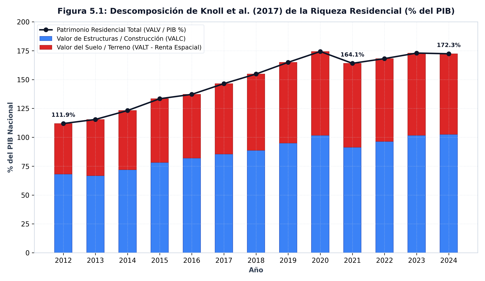
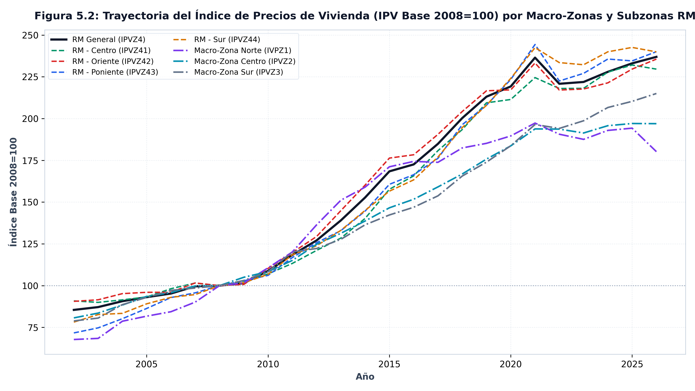
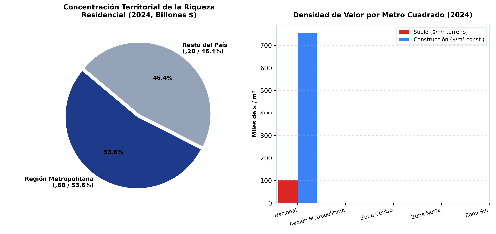

El inmueble como reserva de valor
MACRO-ZONA · 7 zonas
Entre 2012 y 2024, el valor de mercado del stock habitacional chileno escaló de 145,45 billones a 537,00 billones de pesos (de 111,9% a 172,3% del PIB). El valor del suelo subyacente creció 3,8 veces hasta alcanzar 217,66 billones de pesos, con la Región Metropolitana concentrando el 53,6% de la riqueza inmobiliaria nacional.
El argumento
El proyecto de investigación (Figura 4 de la formulación) analiza la riqueza inmobiliaria residencial a través de la descomposición estructural propuesta por Knoll, Schularick y Steger (2017): el encarecimiento secular de la vivienda en las economías capitalistas responde primordialmente a la absorción de rentas de localización por parte del suelo urbano (VALT), y no al costo físico de los materiales ni al reemplazo de estructuras construidas (VALC).
En Chile, la BDE publica las cuentas de stock habitacional que permiten evaluar esta premisa de manera directa, integrando el valor de mercado de las viviendas (VALV), la descomposición entre terreno y construcción, las dimensiones físicas de metros cuadrados y propiedades, y la trayectoria del Índice de Precios de Vivienda (IPV).
Lo que muestran los datos
Entre 2012 y 2024, la valorización de mercado del stock residencial en Chile experimentó una expansión masiva: el valor total de las viviendas pasó de 145,45 billones de pesos (111,9% del PIB) a 537,00 billones de pesos (172,3% del PIB), multiplicándose por 3,7 veces en doce años y alcanzando un techo histórico de 174,3% del PIB en 2021.
La descomposición terreno frente a construcción
Al descomponer este patrimonio residencial a escala nacional: - El valor del suelo urbano (VALT) escaló desde 56,91 billones de pesos en 2012 hasta 217,66 billones de pesos en 2024, multiplicándose por 3,8 veces y elevando su participación del 39,1% al 40,5% del valor habitacional del país. - El valor de las estructuras construidas (VALC) creció de 88,54 billones de pesos a 319,35 billones de pesos.
Tabla 1: Descomposición de Knoll et al. (2017) y Concentración RM (2012 vs. 2024)
| Variable / Dimensión | 2012 | 2024 | Variación (%) / Δ pp |
|---|---|---|---|
| Valor Total Vivienda (\(VALV\)) | 145,45 billones de pesos | 537,00 billones de pesos | +269,2% |
| Riqueza Residencial / PIB | 111,9% | 172,3% | +60,4 pp |
| Valor del Terreno (\(VALT\)) | 56,91 billones de pesos | 217,66 billones de pesos | +282,4% |
| Participación Suelo (\(VALT/VALV\)) | 39,1% | 40,5% | +1,4 pp |
| Valor Construcción (\(VALC\)) | 88,54 billones de pesos | 319,35 billones de pesos | +260,7% |
| Valor Vivienda en RM | 78,48 billones de pesos | 287,84 billones de pesos | +266,8% |
| Participación RM en Riqueza Nacional | 54,0% | 53,6% | +-0,4 pp |

Concentración metropolitana y precios del suelo
La riqueza habitacional muestra una marcada concentración espacial: en 2024, la Región Metropolitana concentra 287,84 billones de pesos, lo que equivale al 53,6% de toda la riqueza habitacional chilena.
Esta valorización patrimonial se refleja en el Índice de Precios de Vivienda (IPV). En la Región Metropolitana, el IPV (base 2008=100) transitó desde un nivel inicial de 81,51 en 2002 hasta un pico de 238,85 en 2021 (multiplicándose por 2,9 veces), situándose en 236,93 hacia 2026.
Tabla 2: Matriz del IPV (Base 2008=100) por Macro-Zona y Subzona RM (2002–2026)
| Macro-Zona / Subzona RM | 2002 | 2008 (Base) | 2014 | 2021 (Pico) | 2026 (Actual) | Δ Acumulada (%) |
|---|---|---|---|---|---|---|
Región Metropolitana (RM General, IPVZ4) |
81,5 | 100,0 | 145,8 | 238,8 | 236,9 | +190,7% |
RM - Centro (IPVZ41) |
86,7 | 100,0 | 145,1 | 236,3 | 229,6 | +164,8% |
RM - Oriente (IPVZ42) |
86,2 | 100,0 | 148,2 | 235,6 | 235,6 | +173,4% |
RM - Poniente (IPVZ43) |
68,5 | 100,0 | 143,1 | 248,6 | 240,0 | +250,3% |
RM - Sur (IPVZ44) |
75,4 | 100,0 | 141,5 | 248,0 | 239,9 | +218,0% |
Macro-Zona Norte (IVPZ1) |
69,0 | 100,0 | 138,5 | 205,6 | 180,2 | +161,1% |
Macro-Zona Centro (IPVZ2) |
79,7 | 100,0 | 139,2 | 203,4 | 196,9 | +147,1% |
Macro-Zona Sur (IPVZ3) |
78,2 | 100,0 | 137,9 | 218,1 | 215,0 | +174,8% |

El Banco Central de Chile calcula el \(IPV\) trimestralmente (Base 2008=100) mediante la metodología de precios hedónicos. La serie \(IPV_{z,t}\) aísla la variación pura de precios controlando por atributos físicos estables (superficie, antigüedad, estructura y localización). Las cuatro subzonas de la Región Metropolitana (IPVZ41 Centro, IPVZ42 Oriente, IPVZ43 Poniente y IPVZ44 Sur) y las tres macro-zonas del país (IVPZ1 Norte, IPVZ2 Centro y IPVZ3 Sur) permiten comparar la velocidad de apreciación del activo residencial. La expansión del IPV en la RM Poniente (+250,3% acumulado) frente a la Macro-Zona Centro (+147,1%) documenta la intensidad desigual de la captura de renta de localización.

La densidad de valor cuantifica la masa patrimonial contenida por unidad de superficie física en 2024 a partir de dos razones: 1. Valor por \(m^2\) construido (\(v^c_z = VALV_z / MCC_z\)): Cociente entre el valor de mercado total del stock habitacional de la zona \(z\) (\(VALV_z\), en pesos) y los metros cuadrados construidos acumulados (\(MCC_z\)). La Región Metropolitana registra $1.669 mil / \(m^2\), frente a $930 mil / \(m^2\) en la Macro-Zona Sur. 2. Valor por \(m^2\) de terreno (\(v^t_z = VALV_z / MCT_z\)): Cociente entre el valor total habitacional y los metros cuadrados totales del predio (\(MCT_z\)). En la Región Metropolitana alcanza $542 mil / \(m^2\) de terreno, cuadruplicando la densidad de las macro-zonas Centro ($146 mil / \(m^2\)) y Sur ($130 mil / \(m^2\)), lo que refleja la hiper-concentración de la renta del suelo en la capital.
La geografía son macro-zonas, no regiones. El Banco Central publica el IPV y el valor del stock habitacional para 4 macro-zonas (Norte, Centro, Sur y RM) y cuatro subdivisiones metropolitanas de Santiago. La descomposición terreno/construcción (VALT vs VALC) sólo existe a escala nacional (NAC, CAS, DEP) y no está disponible para macro-zonas individuales.
Nota metodológica
Las series de valor del stock de vivienda abarcan el período 2012–2024; el IPV cubre trimestres desde 2002 con base 2008=100. En el catálogo original de la BDE, la Zona 1 del IPV se encuentra rotulada con la transposición tipográfica IVPZ1.
Fuente: elaboración propia (2026) en base a la Base de Datos Estadísticos del Banco Central de Chile. Datos: panel_housing_wealth_annual.csv.